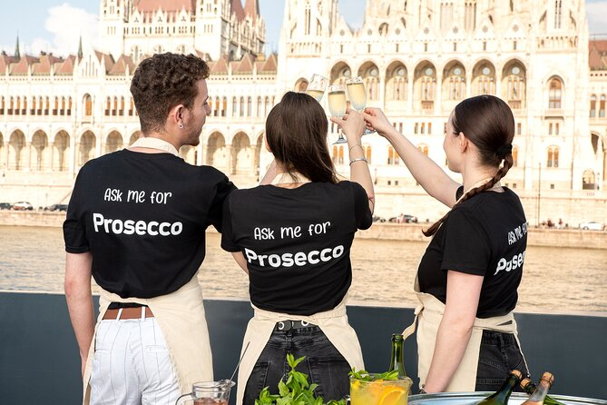
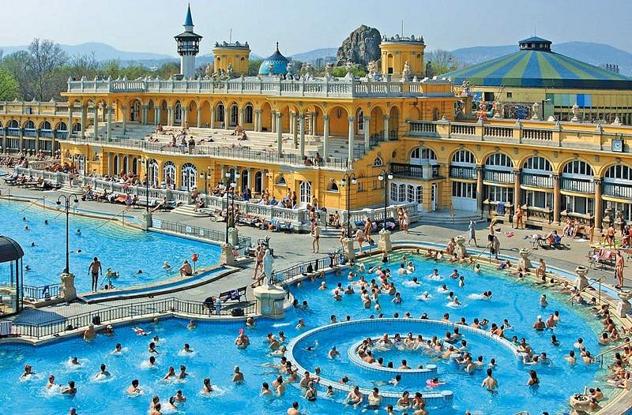

My Take
Budapest surprised me. It's not packed with things to do, but everything feels elevated — especially at night.
The river splits the city, and the views along it are what really make the trip.
Best For
- Short trips
- Scenic views
- Nightlife
- Budget travel
What to Do
Must-See
Parliament building — Stunning architecture, even better lit up at night. Fisherman's Bastion — Great views across the city. Chain Bridge — The iconic crossing between Buda and Pest.
Experiences
Walking along the river — The Danube is beautiful, especially at sunset and night. Thermal baths — Unique experience you won't get in other cities. Night cruise — Seeing Parliament lit up from the water is magical.

🥂 Champagne Cruise
This is honestly a must. Seeing Parliament lit up from the water is one of the best moments. A prosecco or champagne cruise along the Danube at dusk/night completely changes how you experience the city — you get the whole picture from the water.
🛁 Thermal Baths
Super unique experience — something you won't do in other cities. The thermal waters are genuinely therapeutic, and soaking in a historic bath while surrounded by local culture is very Budapest. Go early morning or late evening to avoid crowds.

Where to Eat & Drink
Brunch
- A La Maison - Great brunch spot
Experiences
- Prosecco cruise - Drinks on the water, absolutely worth it
- Ruin bars - Quirky bars in abandoned buildings with amazing atmosphere and cheap drinks (€2–3 beers)
Where to Stay
Neighborhoods
Near the river — Best views and easy access to the main attractions.
City center — Easiest for walkability and getting around.
Budget Options
- Hostels: €14–22/night
- Airbnb: €25–45/night
- Budget hotels: €35–60/night

My Real Tips
- 1–2 days is enough. Budapest is concentrated and easy to cover in a short trip.
- Walk everywhere. The city is very walkable and that's how you discover the best parts.
- Focus on experiences, not just food. The baths, the cruises, the river walks — that's what makes Budapest special.
- Skip overhyped aesthetic restaurants. Stick to ruin bars and casual spots — the vibe is better and it's cheaper.
- Budapest is best at night. The city really comes alive after dark, especially with Parliament and the bridges lit up.
- Bring flip-flops and swimsuit. The baths are essential to the Budapest experience.
- Get a metro day pass (€5). Makes getting around cheap and easy.
Sample Weekend Plan
Friday
Arrive → dinner → drinks
Saturday
Explore → thermal baths → prosecco/champagne night cruise
Sunday
Coffee → walk → leave
Pro tip: Budapest's magic happens when you're on the river at sunset or after dark. Plan your main experiences around these times.